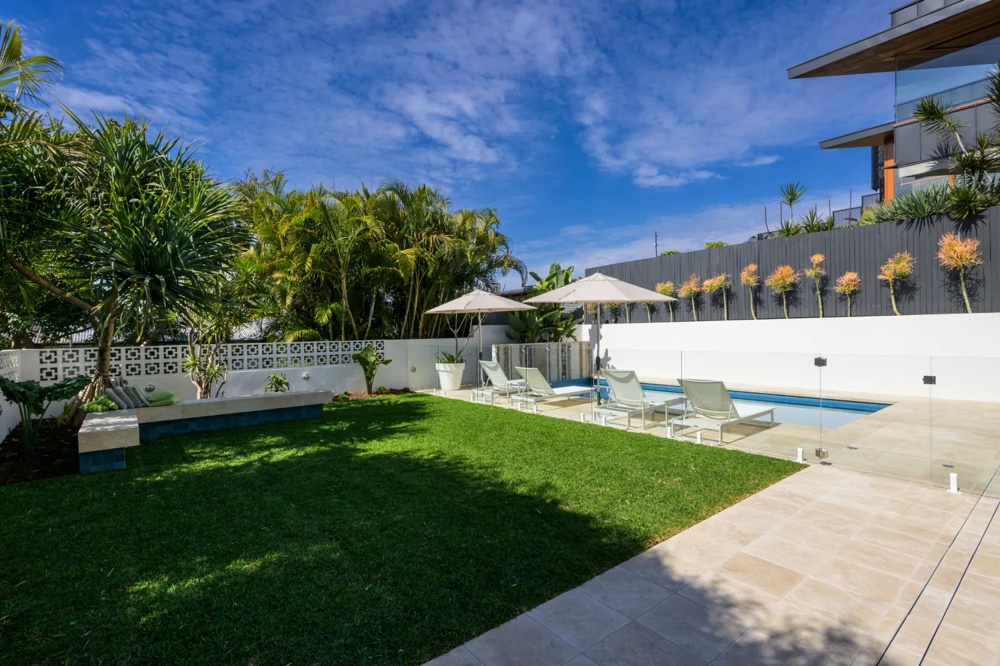
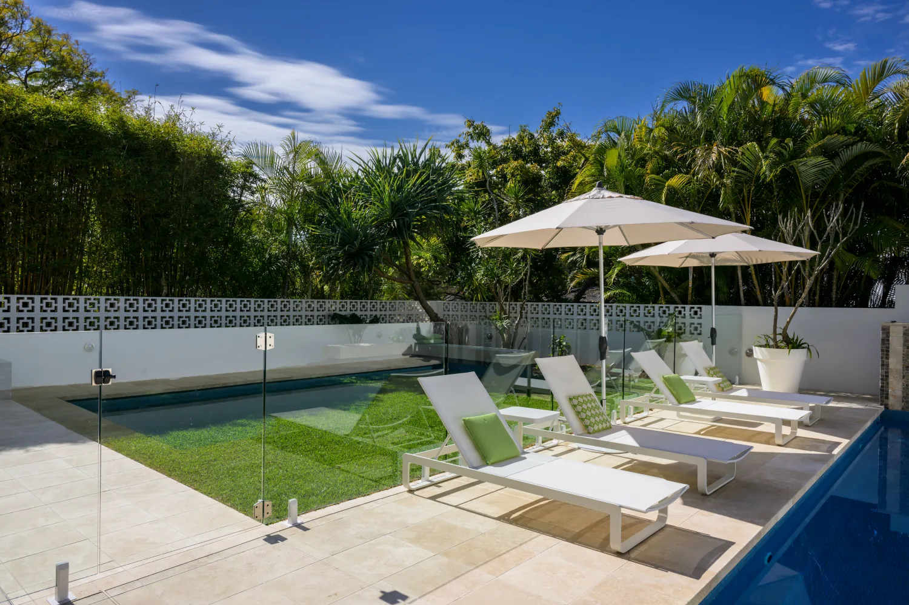

Lap pool, wet edge, sun ledge, spa, infinity into a view. We design to the site rather than dropping in a stock shape, and we handle the engineering that makes it work on tricky ground.
Shape, depth, ledges and position worked out for how you'll actually use the space.
Structural engineering and certification for sloping, tight-access and difficult sites.
Tiles, interiors, coping and waterline finishes chosen with you, shown on real jobs in our gallery.
Every custom pool is a steel-reinforced concrete shell, engineered to your soil and slope and certified before we hand it over. It's the most durable, most flexible way to build, and it holds up for decades. A concrete pool needs a four to six week cure before it's lined, and that patience is exactly what makes it last. If you want to be swimming sooner, a Plungie plunge pool is the fast path.
Your interior sets the mood of the water. We finish in O'Sullivan's pebble and glass ranges. Hover a tile to see the colour.
Colours are indicative on screen and shift with light, depth and weather. We'll show you real samples against your space, and the final call is usually made once the shell's poured.

The magic is in what surrounds it, the decking, the paving, the planting, the lighting for after dark. Because we do the landscaping too, it all lands as one finished space instead of a pool sitting in a building site.
See our landscapingWe used Josh, Matt and their team to project manage and construct a custom concrete pool, retaining walls, fencing, an outdoor entertaining area, concrete and timber stairs, and levelling our sloped block along with turf and garden landscape solutions. Their work, inclusions and finishes were of a top quality. What I liked most was their ability to be flexible and work with you.
Thank you so much, Josh, Matt and the Bespoke team for our gorgeous pool and backyard. Great team onsite and excellent communication. Already have and will continue to recommend you.
Pretty much anything the site allows. Lap pools, wet edges, sun ledges, swim-outs, built-in spas, infinity edges into a view, step ledges and seating. We design to the block rather than dropping in a stock shape, so the pool sits where the sun is, works with the levels, and leaves room for the way you'll live around it.
A steel-reinforced concrete shell is the most flexible and durable way to build a pool. It can be any shape or depth, it's engineered to your soil and slope, and it holds up for decades. That's why it suits sloping, tight and awkward Brisbane blocks where a stock shell won't fit.
Once the shell is sprayed it needs four to six weeks to cure before the interior goes on. Rushing it is how pools crack. We use that window to get on with the fencing, paving and landscaping, so the whole backyard comes together at the same time.
We finish in O'Sullivan's pebble and glass ranges. Standard pebble is hardy, non-slip and the most affordable finish. A 100% glass interior is smoother underfoot, more durable, and gives the water a sparkle. Colour shifts a lot with depth and light, so we show you real samples against your space before you choose.
Usually, yes. We bring in structural engineering for sloping, tight-access and difficult sites, and design the retaining around the pool as part of the same job. Send us your address and we'll take a look before we quote.
Yes. A spa can be built into the pool or sit alongside it, like our Ferny Hills project. We'll talk through jets, seating and how it ties into the rest of the backyard.
Every part of it. Building approval, engineering, certification and a compliant pool barrier are all included, and the same crew builds the fencing, paving and garden. You don't chase a certifier or a second contractor.
Send us your block and your wishlist. We'll come back with what's possible.
Start your project